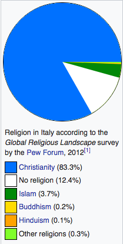

Where Should You Travel?
You Should Travel to Italy!

Italy's history is perhaps the most important one for the cultural and social development of the Mediterranean area as a whole. The country has been host to important human activities in prehistoric times, and thusly archaeological sites of note can be found in many regions: Latium and Tuscany, Umbria and Basilicata. After Magna Graecia, the Etruscan civilisation and especially the Roman Empire that came to dominate this part of the world for many centuries, came the medieval Humanism and the Renaissance that further helped to shape European philosophy and art. The city of Rome contains some of the most important examples of the Baroque. The Italian Renaissance was a cultural movement that began in Tuscany in the 14th century, spreading from Florence to Siena. A number of factors contributed to its emergence, including the influx of Greek scholars following the second invasion of Constantinople by the Ottoman Turks in 1453. The patronage of the arts afforded by the Medici family was another contributing factor. The era gave rise to a number of artistic giants – Leonardo Da Vinci, Michelangelo Buonarotti, Sandro Botticelli, Dante Alighieri and Francesco Petrarch, to name a few. The invention of the printing press by Johannes Gutenberg in the 1440s also contributed to a freer flow of information. The Italy of modern time became a nation-state belatedly - on March 17, 1861 when the states of the peninsula and the two Sicilies were united under king Victor Emmanuel II of the Savoy dynasty, hitherto ruler of Piedmont and kings of Sardinia. The architect of Italian unification, however was Count Camillo Benso di Cavour, the Chief Minister of Victor Emmanuel. Rome itself remained for a decade under the Papacy, and became part of the Kingdom of Italy only on September 20, 1870, the final date of Italian unification. The Vatican is now an independent enclave surrounded by Italy, as is San Marino. The Fascist dictatorship of Benito Mussolini that took over in 1922 led to a disastrous alliance with Nazi Germany and Japan, and ultimately Italy's defeat in World War II. On June 2, 1946 a referendum on the monarchy resulted in the establishment of the Italian republic, which led to the adoption of a new constitution on January 1, 1948. Members of the royal family were sent into exile because of their association with the fascist regime. Italy was a charter member of NATO and the European Union, and hence joined the growing political and economic unification of Western Europe, including the introduction of the Euro in 1999.
Extended HistoryReligion in Italy is characterised by the predominance of Christianity and an increasing diversity of religious practices, beliefs and denominations. Most Christians in Italy adhere to the Catholic Church, whose headquarters are in Vatican City, Rome. The headquarters of the 1.2-billion strong Catholic Church, the State of Vatican City (see also Holy See), is an enclave within the city of Rome and, thus, the Italian territory. The Church's world leader, the Pope, is the Bishop of Rome, hence the special relationship between Italians and the Church—and the latter's entanglement with Italian politics (see Lateran Treaty and the section below on religion and politics). Religion in Italy
Italy has some of the BEST food in the world everything there is made fresh from the farms which are a few kilometers away. All of the food is handmade and makes you feel like your at home! Many different countries copied and mimicked the food because it was so good, for example, the New York Style Pizza. "While nearly every culture has noodles of some sort, no Western culture incorporates it into their cuisine quite as much as the Italians. Pasta is incredibly easy to cook, and a quick sauce is incredibly easy to throw together. And the end result is generally impressive!" and "Every region, every town, every household in Italy has its own distinctive style of cuisine. In Tuscany, you’ll encounter simple and rustic peasant fare. Emilia-Romagna is famous for its hard cheeses and stuffed pastas. In northern Italy you’ll encounter rice, polenta, and butter; in southern Italy you’ll never see butter, only olive oil. Some regions are seafood-centric, some use tomatoes more than others. There’s a whole world of food on the boot, which means that there’s something for everybody."
The Daily Meal


Italy have a relatively short sporting tradition but as with most European countries, they love football. It is their most popular sport with basketball, cycling and volleyball being runners-up. The Italian football team won the 2006 FIFA World Cup and is widely considered as the second best team in the whole of World Cup history, next only to Brazil who has won five championships. Italy has taken a total of four FIFA World Cup's (1934, 1938, 1982, and 2006). They also were once the European champions (1968) as well as a two-time Central European International Cup winners. Italy also has a strong foothold in a number of sports such as rugby, athletics, tennis, fencing, as well as winter sports. Italian riders are well-known in the cycling circuit for winning more World Cycling Championships than any country, with exception to Belgium. The Giro d'Italia is one of the three Grand Tours that is held every May. It normally runs or three weeks, much like the Vuelta a Espana and the Tour de France. Italy has participated in most of the modern Olympic Games since 1896, missing only the 1904 Games. They are one of the most successful nation to ever join either the Summer or Winter Games and have hosted the Games in three separate occasions. Other Info

Italian is a major European language, being one of the official languages of the Organization for Security and Co-operation in Europe and one of the working languages of the Council of Europe. It is the fourth most widely spoken first language in the European Union with 69 million native speakers (13% of the EU population) and it is spoken as a second language by 16 million EU citizens (3%). Including Italian speakers in non-EU European countries (such as Switzerland and Albania) and on other continents, the total number of speakers is around 90 million. Italian is the main working language of the Holy See, serving as the lingua franca (common language) in the Roman Catholic hierarchy as well as the official language of the Sovereign Military Order of Malta. Italian is known as the language of music because of its use in musical terminology and opera. Its influence is also widespread in the arts and in the luxury goods market. Italian has been reported as the fourth or fifth most frequently taught foreign language in the world.
More Info